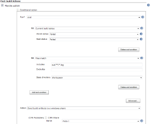
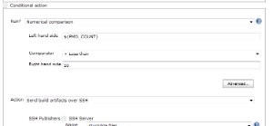
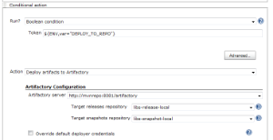
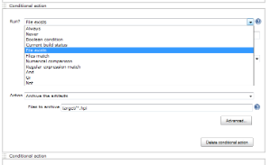

Plugin Information |
|---|
View Flexible Publish on the plugin site for more information. |
Features
- Use a publisher more than once within a build
- Select the execution order of the publishers
- Use Run Conditions to decide whether to publish
- Use Builders as actions by installing the Any Build Step Plugin (which will also install the Conditional BuildStep Plugin)
Always use Always
If you always add your Post-build Actions to Flexible publish, then not only will you be able to change the execution order afterwards, but you will have the ability to temporarily disable a publisher without losing the publishers' configuration.
You can just switch between the Always and the Never run conditions.
|  |  |  |  |
Install
This plugin can be installed from the Update Center (Manage Jenkins > Manage Plugins) under "Other Post-Build Actions".
To install manually, download the latest plugin from http://mirrors.jenkins-ci.org/plugins/flexible-publish/ and use the Upload Plugin option in the Advanced tab of the Plugin Manager.
If you do install manually, you will need to also install the Run Condition Plugin from http://mirrors.jenkins-ci.org/plugins/run-condition/ and the Token Macro Plugin from http://mirrors.jenkins-ci.org/plugins/token-macro/.
Import existing publishers
In Manage Jenkins/ Script console, copy the following to see which publishers can be moved (for a job named 'My Job')
import static org.jenkins_ci.plugins.flexible_publish.JobUpdater.*
def job = hudson.model.Hudson.instance.getItem('My Job')
list job
Or, if you like doing it the hard way ...
org.jenkins_ci.plugins.flexible_publish.JobUpdater.list(hudson.model.Hudson.instance.getItem('My Job'))
You should see a list something like this
Result: Enabled publishers that can be moved: [Publish Checkstyle analysis results] [Publish FindBugs analysis results] [Publish PMD analysis results] [Publish duplicate code analysis results] [Scan for compiler warnings] [Scan workspace for open tasks] [Publish combined analysis results] [Archive the artifacts] [Publish JUnit test result report] [Publish Javadoc] [Record fingerprints of files to track usage] [Git Publisher] [Send build artifacts over FTP] [Send build artifacts over SSH] [Send build artifacts to a windows share] Enabled publishers that cannot be moved: [Aggregate downstream test results] [Build other projects] [Record Emma coverage report] [Report Violations] [E-mail Notification]
You can move a publisher into Flexible publish
import static org.jenkins_ci.plugins.flexible_publish.JobUpdater.*
def job = hudson.model.Hudson.instance.getItem('My Job')
movePublisher job, 'Publish JUnit test result report'
After moving one or more publishers, go to the configure page, check everything looks ok, then save the configuration.
If you like to live on the edge, and would like to move all of the publishers in one go, then ...
import static org.jenkins_ci.plugins.flexible_publish.JobUpdater.*
def job = hudson.model.Hudson.instance.getItem('My Job')
moveAllPublishers job
Used with multi-configuration projects
When you use Flexible Publish Plugin with multi-configuration projects (aka. matrix projects), you should know followings:
Generally, publishers run in two phase for multi-configuration projects.
- Run for each combination of axes. It works just like in Free Style Projects.
- Run for whole the multi-configuration project. This is what is called aggregation.
For example, "Publish JUnit test result report" works:
- see test results in each combination of axes
- sum up the results of all of the combinations.
You can specify conditions both for each combination and the aggregation.
If you want to separate condition for them, check "Condition for Matrix Aggregation" (This appears only in multi-configuration projects).
This is especially useful for the case you want control the execution of the publisher depends on combination of axes.
Be careful to specify the condition, for inconsistent execution causes the build fails.
How flexible publish works when a publisher fails
- Available since flexible-publish-0.15.
You can specify "Execution Strategy" with which flexible publish decides how to work when a publisher fails.
Execution Strategy
Behavior on a failure of a publisher
Fail at end
Continues to run following publishers. The default behavior in flexible-publish 0.15 and later.
Fail fast
Doesn't run following publishers. The default behavior for flexible-publish configured in 0.13 and 0.14.1.
- This works as followings:
Example configuration
Flexible Publish Condition 1 Publisher 1 Publisher 2 Condition 2 Publisher 3When Publisher 1 fails, following publishers are handled as:
Execution Strategy for Condition 1
Publisher 2
Publisher 3
Fail at end
Performed
Performed
Fail fast
Not performed
Performed
- Following conditions are always performed even prior publishers failed.
- Following publishers in a same condition is performed when the execution strategy is "Fail at end".
Limitations
Some publishers may not work with Flexible Publish.
- Some publishers may not be prepared to run more than once during a build
- Some publishers need to find themselves configured in the projects, but fail to do that when included in Flexible Publish.
Known plugins that doesn't work with Flexible Publish
Plugin | Details | Issue |
|---|---|---|
Causes NPE on execution | ||
Tasks will be duplicated if a project contains multiple Post build task | ||
Ignores dependencies wrapped with Flexible publish | ||
"Manually Execute Downstream Project" always triggers downstream projects automatically | ||
Doesn't show up the configured project in the list of options for selection on a consuming project | ||
Silently does nothing |
Side links are duplicated
- Some publishers display side links in project status pages and build status pages.
- Configuring multiple publishers of a same kind results duplicated side links like this (this is a case with Email-ext plugin):

- There's no proper and general way to fix this, and this isn't planned to be fixed as it's harmless.
Known plugins that duplicates site links in project pages with Flexible Publish
Known plugins that duplicates site links in build pages with Flexible Publish
Why named "Flexible Publish" ?
- It's often accused that "Flexible Publish plugin should have been named Conditional Publisher plugin"
- You couldn't reorder publishers with old Jenkins (Jenkins < 1.463). Also see https://groups.google.com/forum/?fromgroups#\!topic/jenkinsci-dev/UQLvxQclyb4
- A feature to reorder publishers was as important as a feature to launch publishers conditionally. So named "Flexible Publish".
Issues
To report a bug or request an enhancement to this plugin please create a ticket in JIRA (you need to login or to sign up for an account). Also have a look on How to report an issue
Change log
0.15.2 (Jun 06, 2015)
- FIXED: Conditions are evaluated for matrix parent builds even if contained publishers doesn't support aggregations (JENKINS-28585)
- Regression in 0.15.
0.15.1 (Mar 29, 2015)
- No functionality changes from flexible-publish-0.15.
- Displays incompatibility warnings in the update center for flexible-publish 0.14.1 and earlier.
- This means the change of the condition evaluation in flexible-publish-0.15.
- Warnings displayed: Marking a new plugin version as incompatible with older versions#Modification to Display of Updateable Plugin List
0.15 (Mar 28, 2015)
- Introduced "Execution strategy" which controls the behavior when a publisher fails. (JENKINS-26936, JENKINS-27278)
- See #How flexible publish works when a publisher fails for details.
- The condition is evaluated only once when multiple actions in a condition (JENKINS-27171).
Example Configutraion
Flexible Publish Condition 1 Publisher 1 Publisher 2It was evaluated like this in flexible-publish 0.14.1
if(Condition 1) { Publisher 1 } if(Condition 1) { Publisher 2 }flexible-publish 0.15 now evaluates as following
if(Condition 1) { Publisher 1 Publisher 2 }If you really need conditions evaluated for each actions, please update the configuration like this:
Flexible Publish Condition 1 Publisher 1 Condition 1 Publisher 2
0.14.1 (Jan 17, 2015)
This is a bug fix for 0.13.
This should be released as 0.13.1, but I mistook. Sorry.
- FIXED: NPE if no publisher in conditional step (JENKINS-26452)
0.13 (Nov 09, 2014)
- Supports multiple actions for a condition. (JENKINS-22187)
- Also work for Depende*n*cyDeclarer introduced in Jenkins 1.501. (JENKINS-25017)
- improved explanation for the aggregation condition. (JENKINS-21345)
- Fixed a wrong error message when failed to instantiate a publisher. (JENKINS-21497)
- Add support for upcoming $class annotation change (JENKINS-25403)
0.12 (14/09/2013)
- Now support publishers with customized Descriptor#newInstance (JENKINS-19494, JENKINS-14454, JENKINS-14597, JENKINS-19257)
0.11 (07/09/2013)
- Support for triggers (JENKINS-19146)
- Support for multi-configuration projects (JENKINS-14494)
0.10 (03/07/2012)
- Fixed JENKINS-13795 NPE when configuring Flexible publish in a new job
0.9 (14/02/2012)
- Stop interfering with the Warnings Plugin's radio buttons (JENKINS-12692)
0.8 (17/01/2012)
- Exclude "Trigger parametrized build on other projects" JENKINS-12418
0.7 (14/11/2011)
- Mark the build as a failure if an action would have stopped the build
0.6 (12/11/2011)
- Add some utility methods to allow publishers to be moved into Flexible publish from the script console
- Don't allow "Build other projects" in the Flexible publish - it does not work here
- Do not allow the actions to prevent other publishers from running (unless they throw an exception)
0.5 (11/11/2011)
- Changed the EP interface
0.4 (11/11/2011)
- Add extension to enable the list of publishers to be modified
0.3 (10/11/2011)
- Updated a help file
0.2 (09/11/2011)
- Enable the user to choose what will happen if the evaluation of a condition fails
0.1 (07/11/2011)
- Initial release
{kind=link}
{kind=link}
{kind=link}
{kind=link}
{kind=link}